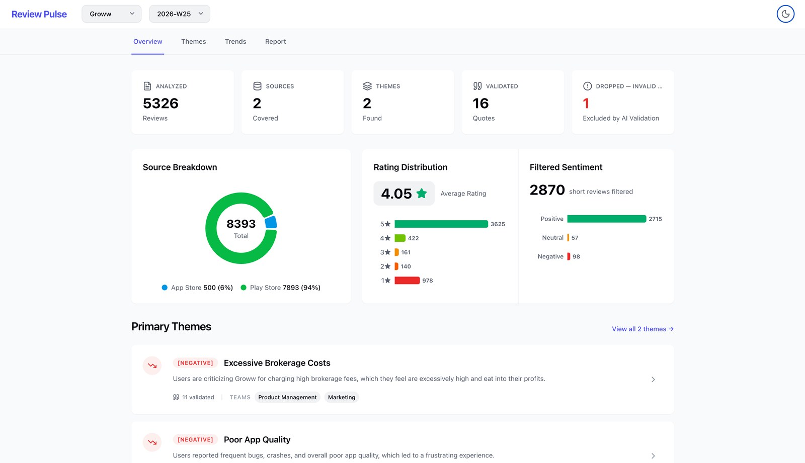
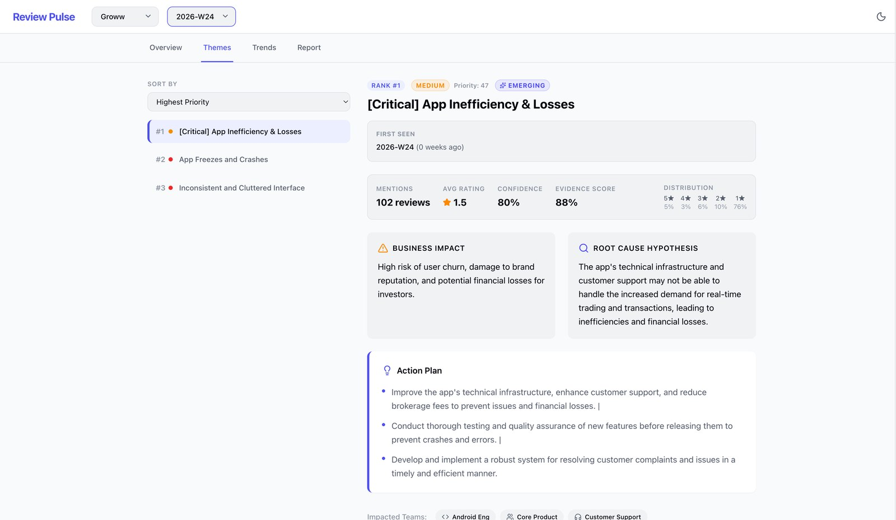
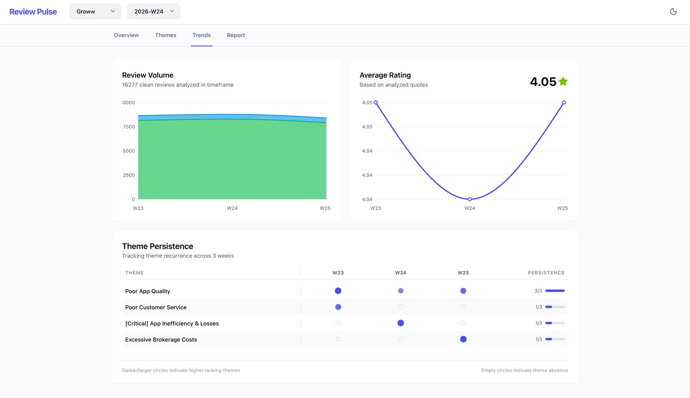
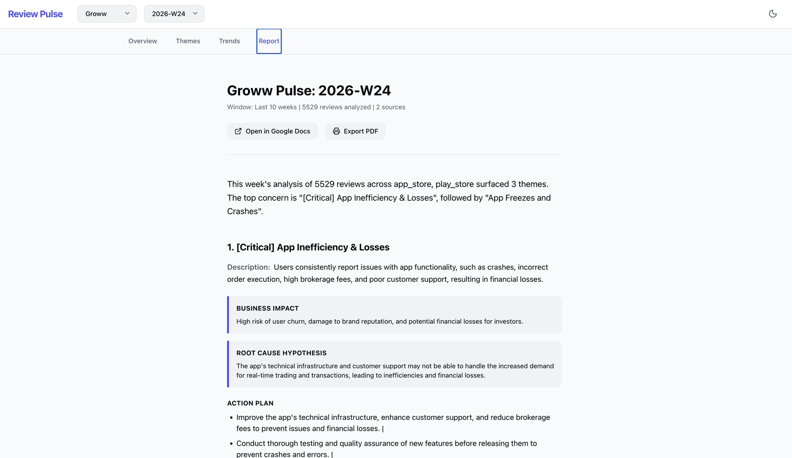
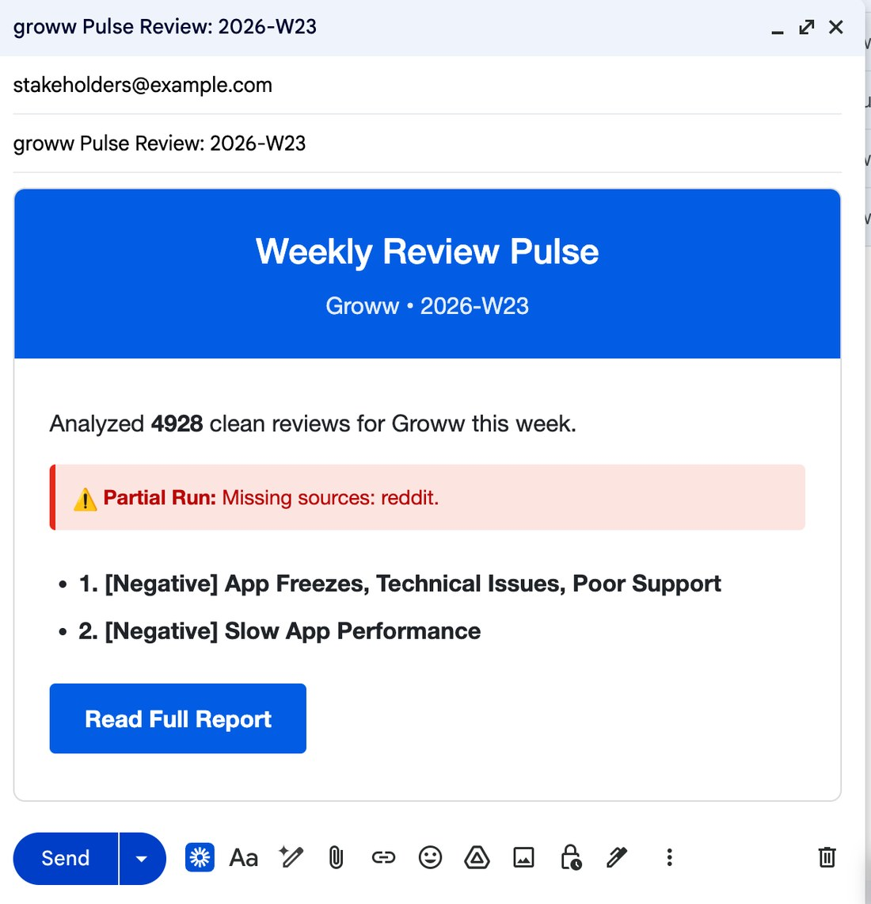

Harsh Vardhan Singh — B.Tech CSE (AI/ML), Next Leap PM Fellow,
ex-HighRadius. I find real problems, design the fix, and put
working products in front of real users.
Spotted two operational gaps nobody asked me to look at. Built
Athena — an LLM call-scoring system with human-in-the-loop
routing — and a unified SDR workspace that drove
27 net-new discovery calls and lifted MCR
15% above team floor.
Apr 2026 – PresentProduct Research
Product Management Fellow
Next Leap PM Fellowship
Ran 30+ surveys and 5 interviews on why Indians don't use
ChatGPT voice. Found the blocker wasn't accuracy — it was
losing control of the workflow (65–70% of users). Reframed
the problem and built a roadmap to 6% adoption.
Optimised MySQL queries and built filtered data-extraction logic so
non-technical teams got only the data they needed — cutting spreadsheet sprawl.
02 — Things I've built
Not prototypes. Live systems.
● LIVE2026
PULSE
Autonomous Product Intelligence Pipeline
Scrapes 8,000+ fintech app reviews weekly, clusters them with UMAP +
HDBSCAN, validates every quote against the source with a 5-stage
anti-hallucination layer, and ships a prioritised fix-list — fully
autonomous, $0 to run.
A RAG platform over India's Specialised Investment Funds — 30+ strategies,
10+ AMCs, thousands of SEBI/AMFI pages. Cites every source because
confidently-wrong financial data is worse than none.
A 3-agent pipeline (Ranker → Critic → Synthesizer) on Llama-3. The Critic
validates every output against a real candidate list — zero hallucinated
results reach the user. Cost-aware routing cut token spend ~70%.
Turned 100% manual call auditing (covering <15% of calls) into a
deterministic 10-point scoring system with human-in-the-loop routing —
so the AI never auto-decides on high-stakes calls.
Pre-auth redesign + AI resume screening. Both use early-risk detection
and human-review routing via n8n — cutting manual effort
50–70% across 100+ daily cases each.
End-to-end semantic segmentation for satellite imagery (RGB + SAR), with
physics-informed refinement to cut false positives and an explainable
inference dashboard. Linked to an IEEE paper submission.
A full product-strategy case study. The reframe: pet owners aren't hiring
a dog walker — they're hiring peace of mind. Built with JTBD,
4-segment user analysis, a trust-first feature prioritisation, a North Star
metric, and a subscription business model with a real defensibility moat.
JTBDSegmentationPrioritisationNorth StarBusiness Model
Real screens from the live PULSE dashboard — autonomous review intelligence, from raw app-store noise to a prioritised fix-list. Click any frame to enlarge.
pulse · overview

Overview — 5,000+ reviews clustered, validated, and scored each run.
pulse · themes

Themes — each issue ranked with impact, root cause & an action plan.
pulse · trends

Trends — what's recurring week over week, not just this week's noise.
pulse · report

Report — an auto-written PM brief, exported to Google Docs.
pulse · digest

Digest — a stakeholder email drafted automatically every Monday.
I'm an AI/ML graduate who kept noticing the same thing: the gap between
a good idea and a working product is mostly judgment — knowing
which problem is real, and where the AI should step back and let a human decide.
At HighRadius I didn't wait to be assigned product work — I watched how
SDRs actually worked, found the friction, and built the fix. Outside of
any job, I've shipped live products (PULSE, SIF Copilot, Gourmet AI) that
all share one principle:
build trust into the system, don't bolt it on after.
I'm product-led and AI-assisted — I own the problem framing, the system
design, and the decisions, and I use AI tooling to ship fast. Now I'm
looking for a product team where the problems are messy and the bar is high.
The short version above is the pitch. This is the honest, unabridged path — the rabbit holes, the wrong turns, and the moment product clicked for me. If you read this far, you already know the kind of person I am.
01
The itch
I can't leave a "why" alone.
The honest through-line of my life is one stubborn habit: when something works — or doesn't — I have to know why. I chose Computer Science with an AI/ML specialisation at SRM because I wanted to build things that think. But coursework was never enough. I kept building side projects in completely unrelated domains, purely to answer "could this actually work?"
02
2023 · CMPDI
The first time tech meant someone's afternoon.
I interned at CMPDI, a Coal India subsidiary — optimising MySQL queries and building filtered data-extraction logic so non-technical teams got exactly the data they needed and nothing they didn't. It was unglamorous public-sector work, but it taught me the lesson everything else built on: the win wasn't the faster query — it was the hours of spreadsheet-wrangling it deleted from someone's week.
03
2024–25 · Building across domains
Different fields, the same itch.
I couldn't stop building, and I refused to stay in one lane. AQUA-SENTINEL — oil-spill detection on satellite imagery (RGB + SAR) with physics-informed refinement, tied to an IEEE paper submission. A country-wise GDP target tracker — economics, CAGR analysis, a Power BI dashboard. Healthcare pre-authorisation automation and HR resume screening pipelines. Satellites, economics, hospitals, hiring — totally different worlds, identical instinct: find a real problem, build the thing, see if it holds up under real data.
04
The realisation
The hard part was never the code.
Somewhere in that pile of projects it clicked. The gap between a good idea and a product people trust is rarely engineering — it's judgment. Which problem is actually worth solving? Where should the AI step back and let a human decide? How do you measure whether it worked? That's product management. And it was the part I'd been quietly enjoying most the whole time.
05
Sep 2025 – Jan 2026 · HighRadius
I didn't wait to be assigned product work.
Six months at an enterprise FinTech SaaS — and nobody handed me a product brief, so I went looking. I watched SDRs juggle 4–5 tabs on live calls and built a unified workspace that drove 27 net-new discovery calls and lifted MCR 15% above the team floor. I saw call auditing covering under 15% of calls and built Athena, an AI scoring system with human-in-the-loop routing so the model never auto-decides on a high-stakes call. I defined and tracked the funnel metrics (MCR, MCCR) myself, because if you can't measure it you're just guessing.
06
2026 · All-in on product
From "I think I'm a PM" to proving it.
I joined the Next Leap PM Fellowship and ran 30+ surveys and 5 interviews on why Indians don't use ChatGPT voice. The blocker wasn't accuracy — it was losing control of the workflow (65–70% of users couldn't edit what they'd said). I reframed it from a tech problem into an interaction-design problem, built a KPI tree, and shipped a roadmap targeting 2% → 6% adoption. In parallel I shipped PULSE, SIF Copilot, and Gourmet AI — all live, all built on one principle: design trust into the system, don't bolt it on after.
07
Now
What I'm chasing next.
A product team where the problems are messy, the domain is real, and the bar is high — somewhere I can keep doing the thing I've always done: chase the real problem, build trust into the system, and ship. If that sounds like your team, the fastest way to know if I'm right is to ask my AI — or just email me.
04 — For recruiters
Ask my AI anything.
It's trained only on me — my projects, experience, and how I think. Built for recruiters to get answers fast. (It won't answer anything that isn't about me.)
H
Ask Harsh
Knows everything about Harsh
AI
H
Hi! I'm Harsh's AI — I know his projects, experience, and exactly how he thinks about product. What would you like to know? (Try one of the chips below.)